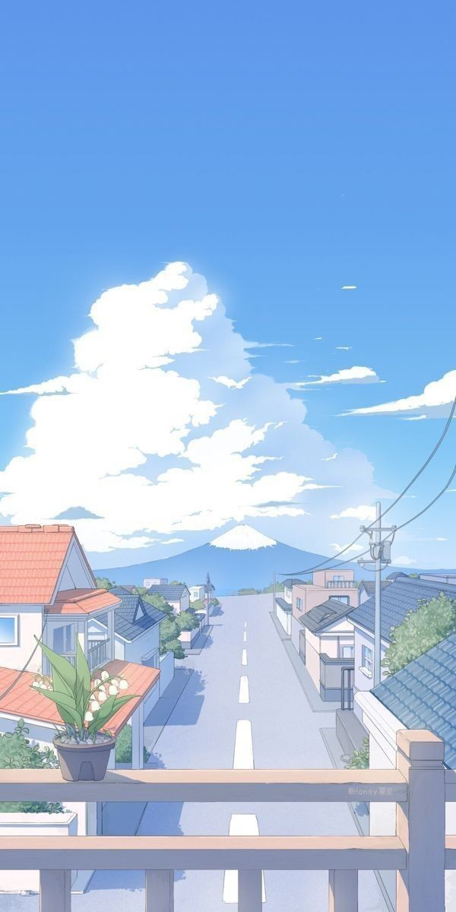

BAB VII – Cinta, Takut, Berharap & Tawakal kepada Allah SWT
Mulai
Rifan Rizky Fadillah | 10.1

3
Click untuk penjelasan
Cinta kepada Allah
Takut kepada Allah
Berharap kepada Allah
Tawakal kepada Allah
Kembali